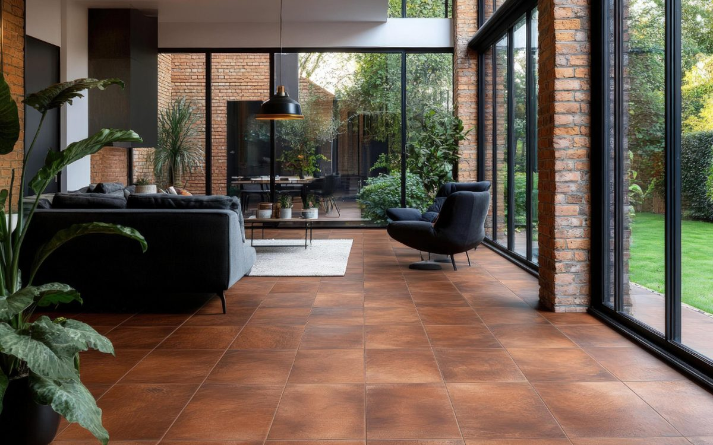
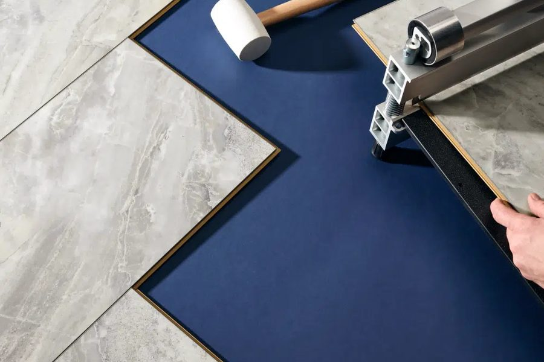

Tile and stone looks, minus the cold.

| Made of | Layered vinyl with a waterproof core |
|---|---|
| Water | Waterproof |
| Durability | Scratch- and dent-resistant |
| Refinishable | No |
| Typical cost level | $$ to $$$ |
Luxury vinyl tile (LVT) gives you the look of stone, ceramic, or concrete in a floor that is waterproof and more comfortable underfoot than the real thing. You get the upscale tile look without cold, hard surfaces.
| Luxury Vinyl Plank | Luxury Vinyl Tile | |
|---|---|---|
| Looks like | Real hardwood planks | Stone, ceramic, or concrete tiles |
| Shape | Long, narrow planks | Square or rectangular tiles |
| Waterproof | Yes | Yes |
| Best in | Living areas, bedrooms, hallways, basements | Kitchens, bathrooms, laundry rooms, entryways |
| Style | Warm and traditional | Clean, modern, tile-like |
Both are built the same way. It comes down to the look you want in the room.

Sweep or vacuum regularly and mop with a pH-neutral vinyl cleaner. Avoid abrasive cleaners, wax, and steam mops. Wipe spills promptly.
They are built the same way. LVP looks like wood planks, and LVT looks like stone, ceramic, or concrete, usually in square or rectangular tiles.
No. It feels warmer and softer underfoot than ceramic or porcelain.
Yes. It is waterproof, which makes it a popular choice for bathrooms, kitchens, and laundry rooms.
Call or email to get a quote.